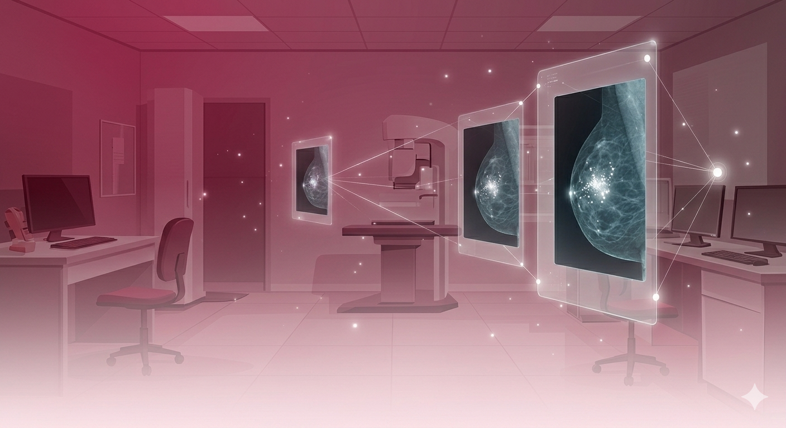

Microcalcification Detection Example
From mammogram ROI to precise segmentation output

Original ROI — Mammogram Region

AI Segmentation — Detected Microcalcifications
Precise, automated mammography imaging analysis to assist physicians in detecting microcalcification clusters with state-of-the-art AI algorithms.
Advanced capabilities designed for clinical mammography workflows
Locates microcalcification clusters with high sensitivity using advanced deep learning models.
Rapid image analysis supports efficient clinical workflows with near real-time results.
Generates detailed reports with risk stratification to support clinical decision-making.
Integrates with standard DICOM viewers and existing hospital systems.
Our AI overlays intelligent analysis results onto mammography findings, providing radiologists with data dashboards and visual markers directly on the imaging data.
Designed for seamless integration into existing clinical workflows, the platform processes mammograms in seconds and highlights regions of interest for further review.
Learn More
See how MammoDetect AI processes and analyzes mammograms
From mammogram ROI to precise segmentation output
Our contributions to the medical imaging community
Peer-reviewed research behind our technology